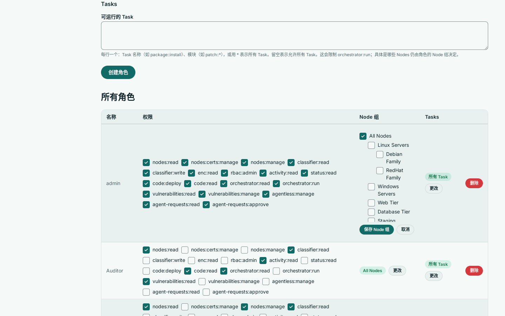

使用
用户、角色与令牌
通过角色和权限授予人员访问权限，使用你的身份提供方登录，并为程序签发令牌。
控制台中的一切都受权限控制，而每项权限都通过角色授予人员。程序（例如 enc-bridge）则改用服务令牌。
管理用户、角色和令牌需要 rbac:admin。
权限列表
| 权限 | 允许 |
|---|---|
nodes:read |
查看 Nodes 及其 Facts、Reports、软件包、待安装的更新和证书状态 |
nodes:manage |
删除 Nodes，以及设置控制台扫描待安装更新的频率 |
nodes:certs:manage |
对证书进行签名、吊销和清理——等同于 CA 管理员 |
classifier:read |
查看 Node 组 |
classifier:write |
创建、更改和删除 Node 组 |
enc:read |
像 openvoxserver 那样读取分类 |
code:read |
查看仓库和 deploy |
code:deploy |
启动 deploy |
orchestrator:read |
查看 Jobs |
orchestrator:run |
启动 Jobs（Puppet 运行、Tasks、Plans 和补丁运行）、切换 Node 的软件包上报，以及扫描 Nodes 的待安装更新 |
vulnerabilities:read |
查看漏洞发现 |
vulnerabilities:manage |
配置漏洞提供方 |
agentless:manage |
添加、更改和删除无代理 SSH 目标和共享凭据，以及信任其主机密钥 |
activity:read |
查看活动日志 |
status:read |
查看「系统」页面 |
agent-requests:read |
查看 AI 代理请求运行了什么 |
agent-requests:approve |
批准和拒绝这些请求 |
rbac:admin |
管理用户、角色、服务令牌和代理令牌 |
引导管理员拥有所有权限。新版控制台中新增的权限绝不会自动添加到现有角色中，因此升级之后，请在角色页面上把新权限授予应当拥有它们的角色。
授予某人访问权限
- 打开管理，然后打开角色，创建一个拥有该工作所需权限的角色——例如，对于只查看而不做更改的人，授予
nodes:read、classifier:read和orchestrator:read。 - 打开用户，创建用户，并分配该角色。
用户的权限是其所有角色的组合。要为整个团队分配相同的角色，请使用用户组。
密码与锁定
这些规则适用于使用用户名和密码登录的账户。它们不适用于通过你的身份提供方登录的人，也不适用于服务令牌。管理员（rbac:admin）在管理下的账户策略中设置它们。更改会立即在每个控制台实例上生效。
密码规则
| 规则 | 默认值 | 可调范围 |
|---|---|---|
| 最小长度 | 12 个字符 | 8 到 72 |
| 必须包含小写字母、大写字母、数字、符号 | 无要求 | 各自可开启或关闭 |
有两条规则无法关闭：密码不能与账户的用户名相同，也不能超过 72 字节。
密码会在设置时被检查：当管理员创建用户或设置用户密码时，以及当某人在偏好设置中修改自己的密码时。这些表单都会列出规则，并标记出被拒绝的密码未满足的规则。
已有的密码不会被重新检查。收紧规则之后，每个人仍然可以登录；新规则会在每个密码下次修改时生效。
锁定
连续 10 次密码登录失败后，账户会被锁定 15 分钟。两个数字都可以更改（3 到 100 次登录；1 到 1,440 分钟），也可以关闭锁定功能。
- 账户被锁定期间，即使密码正确也会被拒绝。锁定期间的登录失败不会延长锁定时间。
- 锁定会自行结束。一次成功的登录会把计数归零。
- 登录失败次数会在所有控制台实例之间合并计算。
- 登录页面不会提示账户已被锁定。它给出的回应与密码错误时相同，因为提示「已锁定」会让攻击者知道哪些用户名存在。每次登录失败的消息都会提到，多次尝试失败后账户会被锁定。
锁定是针对密码猜测的，因此它只会阻止密码登录：
- 已经打开的会话会继续有效。
- 通过你的身份提供方登录仍然有效。
- 服务令牌不受影响。
- 修改自己的密码时需要输入当前密码。当前密码错误会计为一次登录失败，而且在账户被锁定期间，修改会被拒绝。
解锁账户
打开管理，然后打开用户。被锁定的账户会显示锁定至及时间。选择解锁，或选择设置密码为该用户设置新密码，这同样会解锁该账户。
如果唯一的管理员被锁定，而且没有其他人能解锁该账户，请等待锁定结束。为了防止有人故意制造登录失败而让某个账户一直处于锁定状态，请在控制台前面放置一个对 /api/v1/auth/login 的请求进行限流的组件，或者关闭锁定功能，转而依靠限流。
锁定、解锁、被拒绝的密码以及对策略的更改都会写入审计日志；锁定、解锁和策略更改还会出现在活动页面上。
为组分配角色
用户组是一组有名称的用户。授予某个组的角色由其每个成员持有，并叠加在他们自己持有的角色之上，因此当团队发生变化时，你只需更改组，而不必逐个更改账户。
- 打开管理，然后打开用户组，为组命名并选择创建组。
- 在成员下选择更改，并勾选属于该组的用户。
- 在角色列中勾选该组应授予的角色。
属于多个组的人，或者既自己持有某个角色又通过组持有该角色的人，只算持有一次。从个人身上移除该角色，组的授权仍然保留；把他从组中移除，他自己持有的角色仍然保留。
用户页面会显示每个人所在的组以及他们通过这些组持有的角色，例如「Patcher（通过 Web ops）」。这些角色无法在那里取消勾选：请更改组。角色页面会显示每个角色被授予了哪些组。
组与限制
组只是增加角色，而不会合并角色。每个角色仍然只作用于它自己的 Node 组，如果有的话，也只适用于它自己的 Task 列表，这与直接分配给个人的角色相同。如果某人所在的组授予了一个在 Web 服务器上仅限 patch::* 的角色，同时他本人还被分配了一个允许在数据库服务器上运行所有 Task 的角色，那么他可以在 Web 服务器上运行补丁 Task，并在数据库服务器上运行任何 Task。
删除与移除
- 删除组会收回其成员通过该组获得的角色。如果该组有成员，控制台会在删除之前说明有多少人受到影响。
- 删除用户会将其从所属的组中移除；删除角色会将其从持有它的组中移除。
- 如果删除某个组、从组中收回某个角色或移除某个成员会导致没有任何人拥有
rbac:admin，控制台就会拒绝执行。
变更何时生效
加入或离开组，以及授予或吊销组的角色，都会像任何角色变更一样，在该人员的会话下次刷新时（15 分钟内）生效。计划的 Job 每次触发时都会依据其所有者的组进行检查。
对组、其成员及其角色的每次更改都会写入审计记录的 rbac 类别下。
将角色限制为你的部分 Nodes
角色的权限作用于 Node 组。新角色会在 All Nodes 上被授予，也就是整个机群。若要把某个团队限制在其自己的服务器上，请改为在该团队的组上授予该角色：
- 确保某个 Node 组恰好包含该团队应当看到的 Nodes——参见为 Nodes 分类。
- 打开管理，然后打开角色。
- 在该角色的 Node 组列中，选择更改，取消勾选 All Nodes，然后勾选该团队的组。
- 选择保存 Node 组。


在某个组上的授权覆盖其下的每个组，因此在 Linux Servers 上的角色也能看到 Debian Family 中的 Nodes。该角色的成员会在其会话下次刷新时（15 分钟内）获得这一变更；移入或移出该组的 Node 会在一分钟内出现或消失。
以这种方式受限的人，在所有出现 Node 数据的地方都只能看到自己的 Nodes：Node 列表以及每个 Node 的 Facts、Reports、软件包和漏洞，Dashboard 上的数字，软件包目录，漏洞列表，Jobs 页面，以及组和 Code 页面上的 Node 计数。他们组外的 Node 的应答与一个不存在的 Node 完全相同。Nodes 页面会说明他们正在查看哪些组。
同样的组也限制了他们能做什么。运行 Puppet、Task 或 Plan，切换 Node 的软件包上报，升级其代理，删除它，以及对其证书进行签名、吊销或清理，都要求该 Node 位于授予相应权限的角色的组中。指定了组外 Node 的操作会被拒绝，控制台会说明是哪些 Nodes。当一个操作指定了多个 Nodes 而其中一个在组外时，所有 Nodes 上都不会执行任何操作。
Job 的 Nodes 也可以通过查询或 Node 组来选择，而不是按名称——参见运行 Jobs。这些方式会被收窄，而不是被拒绝：仅限部分 Node 组的人会得到位于其组内的匹配 Nodes，并且不会得知其余 Nodes 的任何信息。他们的查询不能包含子查询，否则子查询可能被用来探知其组外的 Nodes。
计划的 Job 以其所有者的身份运行，每次启动时都使用所有者当时的角色。移除某人的角色会使其计划不再启动任何东西；缩小其角色范围，其计划运行的范围也会随之缩小。每个人都能查看和更改自己的计划，只有在 All Nodes 上被授予的角色才能查看和更改所有人的计划。
能看到的多于能更改的
每项权限都受授予它的角色所限，因此查看范围和操作范围可以不同。若要让某个团队能查看整个机群、但只能在自己的服务器上运行 Puppet，请给团队成员分配两个角色：
| 角色 | 权限 | Node 组 |
|---|---|---|
| 机群查看者 | nodes:read, classifier:read, orchestrator:read |
All Nodes |
| Web 操作员 | orchestrator:run |
Web Servers |
他们能看到每个 Node 和每个 Job，而在数据库服务器上的运行会被拒绝。
Node 组不限制的内容
- 活动页面。它就是审计记录，会列出每个 Node 的名称。请只把
activity:read授予可以了解整个机群的人。 - Node 组定义。拥有
classifier:read的每个人都能看到每个组，包括固定在组上的 Node 名称；拥有classifier:write的人可以更改任何组。 - 服务令牌，它们始终作用于整个机群。它们可以像角色一样被限制为只能运行部分 Tasks——参见为程序签发令牌。
- 已保存的 Plans。拥有
orchestrator:read的每个人都能看到每个 Plan，拥有orchestrator:run的每个人都可以更改其中任何一个。运行时仅限于你的 Nodes。 - 代码 deploy，它们与某个 Node 无关。
注意事项
- 从未运行过 Puppet 的 Node 没有 Facts，因此不会匹配任何组的规则。只有被固定到某个组时，它才会出现在团队的组中。这也包括正在等待证书签名的 Nodes——参见管理 Node 证书。
- 完全没有 Node 组的角色会显示没有 Node 组警告。它的权限不作用于任何 Node。
- Job 历史记录跟随 Node 当前所在的组。当 Node 移到另一个组时，它过去的 Jobs 也会随之移出旧组的视图。
将角色限制为部分 Tasks
仅有 orchestrator:run 就能让某人在该角色覆盖的 Nodes 上运行控制台已知的所有 Task。若要让某个团队只能运行补丁相关的 Task，请为其角色设置 Task 允许列表：
- 打开管理，然后打开角色。
- 在该角色的 Tasks 列中，选择更改。
- 每行输入一个模式，然后选择保存 Task。新建角色表单中也有相同的字段。
模式为以下之一：
| 模式 | 允许 |
|---|---|
package::install |
仅该 Task |
patch::* |
patch 模块中的所有 Task，以及该模块自身的 Task patch |
* |
所有 Task |
匹配是精确且区分大小写的，因此 patch::* 不允许 patching::apply。其他任何形式都不被接受：通配符出现在其他位置的模式、空行或大写字母都会被拒绝，表单会保留你输入的内容。一个角色最多可以有 20 个模式，每个最长 64 个字符。
没有任何模式的角色允许所有 Task。你现有的每个角色都保持这种状态，因此在你添加模式之前，什么都不会改变。该列表只会收窄 orchestrator:run：它从不授予任何东西，而哪些 Nodes 仍由角色的 Node 组决定。
一个人的多个角色如何组合
每个角色的列表只作用于该角色自己的 Node 组，而不是该人员的所有 Node 组。拥有以下两个角色的人：
| 角色 | Node 组 | Tasks |
|---|---|---|
| Web 补丁员 | Web Servers | patch::* |
| 数据库操作员 | Database Servers | （所有 Task） |
可以在 Web 服务器上运行 patch::apply，在数据库服务器上运行任何 Task，而 package::install 之类的 Task 在 Web 服务器上会被拒绝。拥有第二个角色并不会扩大第一个角色的范围。
当 Task 在由查询或 Node 组选出的 Nodes 上启动时，它会在该人员有权运行它的匹配 Nodes 上运行，并且不会透露其余 Nodes 的任何信息，与 Node 组的情况相同。Plan 会被收窄到其每一个 Task 步骤都可以运行的 Nodes，因此它的所有步骤仍然在同一批 Nodes 上运行。指定的 Nodes 列表中只要包含一个不允许运行该 Task 的 Node，就会被拒绝，并指出该 Node。
拒绝是什么样子
启动该人员的角色不允许的 Task 会被拒绝，返回 403 及该 Task 的名称；不会启动任何东西。如果是 Plan，还会指出步骤，例如 step 2 (package::install)。不存在的 Task 与该人员无权运行的 Task 会以同样方式被拒绝，因此该列表不会透露哪些 Tasks 存在。每次拒绝都会以 task.denied 记录在审计日志中，包括该人员、Task 和步骤，但绝不包括 Task 的参数。
该列表不限制的内容：
- Puppet 运行，它们不属于 Tasks。
- 查看 Jobs 及其历史记录。它限制的是某人可以启动什么。
- 只能读取的人。拥有
orchestrator:read但没有orchestrator:run的人可以在 Task 列表中看到所有 Task。
运行 Task 对话框、Plan 编辑器和计划表单只会提供该人员有权运行的 Tasks。
Plans 与计划
- 保存包含该人员无权运行之 Task 的 Plan 或计划会被拒绝，并指出相应的步骤和 Task。
- 别人保存的 Plan 会向允许列表较窄的人显示所有步骤，并标记出其无权运行的步骤。他们不能运行该 Plan，也不能保存对它的更改，除非删除那些步骤。
- 计划每次启动时都会被检查，依据的是其所有者当时的角色。如果所有者已无权运行其中某个 Task，就不会启动任何东西，本次触发会被记录为已跳过，并注明该 Task（如果是 Plan，还会注明步骤）。
变更何时生效
与其他权限一样，角色的列表会在某人的会话下次刷新时（15 分钟内）生效。计划会在下次启动时采用它。
一个人的 Task 列表会随其访问令牌一起传递。上述限制使单个角色最多约 1.3 KB，而大多数人只带有几个简短的模式。如果你给某人分配了许多受限角色，请检查控制台前面的反向代理是否接受那么大的请求头；有些代理只允许 8 KB。
使用你的身份提供方登录
控制台还可以通过 OpenID Connect 让人员登录。本地登录和服务令牌仍可同时使用。在你的提供方处注册控制台，重定向 URL 为 https://console.example.com/api/v1/auth/oidc/callback，并设置：
| 设置 | 说明 |
|---|---|
CONSOLE_OIDC_ISSUER |
你的提供方的 issuer URL |
CONSOLE_OIDC_CLIENT_ID, CONSOLE_OIDC_CLIENT_SECRET |
控制台的注册信息 |
CONSOLE_OIDC_REDIRECT_URL |
上面的重定向 URL |
CONSOLE_OIDC_SCOPES |
默认为 openid profile email groups |
CONSOLE_OIDC_USERNAME_CLAIM |
新用户名称所取自的 claim；默认为 email |
CONSOLE_OIDC_ROLE_CLAIM |
列出某人所属组的 claim；默认为 groups |
CONSOLE_OIDC_ROLE_MAPPING |
一个从 claim 值映射到角色名称的 JSON 对象，例如 {"platform-admins":"admin"}；每个角色都必须已经存在，未映射的值会被忽略 |
随后登录页面会提供使用 SSO 登录。每次登录时，控制台都会根据该人员当前的 claims 授予其所映射的角色，并移除其 claims 中已不再包含的映射角色。管理员手动分配的角色永远不会受到影响。
你的提供方必须把用户名和组的 claims 直接放在 ID token 中，而不只是放在其 user-info 端点后面。有些提供方在同时签发 access token 时默认不会把它们放进 ID token，需要通过某项设置来包含它们。
为程序签发令牌
服务令牌拥有一组在创建时选定的固定权限，并且永远不会自行过期。为每个程序单独创建一个，只授予它所需的权限：
- 打开管理，然后打开服务令牌。
- 在新建服务令牌下，为其命名并选择权限。
- 可选：在可运行的 Task 下列出它可以启动的 Tasks，每行一个模式，与角色相同。留空则允许所有 Task。该列表在令牌创建时固定。
- 选择创建服务令牌，并复制令牌：它只显示一次。
删除服务令牌会立即在每个控制台实例上将其吊销。退出登录也会以同样方式吊销该会话的令牌。
要为 AI 代理提供访问权限，请改用代理令牌：它会过期，仅限于 Node 组，并且它请求的每项更改都要等待人员批准。参见让 AI 代理使用控制台。
保留审计记录
通过控制台所做的每项更改都记录在活动页面上，查看该页面需要 activity:read。此外，控制台还可以为日志收集器写入审计日志，每个类别各有一个级别：
| 设置 | 类别 |
|---|---|
CONSOLE_AUDIT_NODES |
Nodes 与证书 |
CONSOLE_AUDIT_CLASSIFIER |
Node 组 |
CONSOLE_AUDIT_RBAC |
用户、用户组、角色和令牌 |
CONSOLE_AUDIT_AUTH |
登录和退出登录 |
CONSOLE_AUDIT_CODE |
代码 deploy |
CONSOLE_AUDIT_ORCHESTRATOR |
Jobs，以及因角色不允许而被拒绝的 Tasks |
CONSOLE_AUDIT_VULNERABILITIES |
漏洞提供方 |
每一项可以是 off、writes（默认：变更和登录）或 full（还包括每次查看）。除非 CONSOLE_AUDIT_LOG_PATH 指定了文件，否则审计事件会写入控制台自身的日志输出。